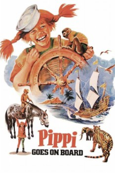

Also known as:Här kommer Pippi Långstrump (original title)
Country:Sweden, 83 minutes
Spoken languages:Swedish, German
Genres:Family
Director(s):Olle Hellbom
Writer(s):Astrid Lindgren, Astrid Lindgren
Video Codec:Unknown
Number: 5719

Certification:G
Storyline:
Pippi Longstocking lives alone in Villekulla because her mother is an angel in heaven and her father is a pirate king in the Southern Seas. She befriends her next door neighbors, siblings Tommy and Annika, who are swept into Pippi's wild adventures.
Cast:
Inger Nilsson (as Pippi Långstrump), Pär Sundberg (as Tommy Settergren), Maria Persson (as Annika Settergren), Margot Trooger (as Fröken Prysselius), Hans Clarin (as Donner-Karlsson)
Medium: Media file,
Location: D:\Pippi Longstocking Collection\Pippi Goes On Board.avi
Loaned: No
Aspect ratio: Unknown